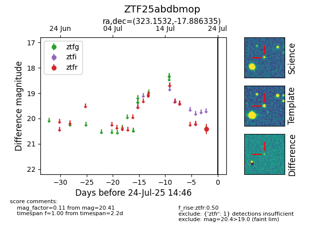

Target ZTF25abdbmop at 2025-07-24 14:46, see:
FINK: fink-portal.org/ZTF25abdbmop
Lasair: lasair-ztf.lsst.ac.uk/objects/ZTF25abdbmop
ALeRCE: alerce.online/object/ZTF25abdbmop
alt names
ZTF25abdbmop (ztf,fink)
coordinates:
equatorial (ra, dec) = (323.1532,-17.88634)
galactic (l, b) = (33.5076,-43.45536)
photometry
last ztfr=20.41
1 ztfr detections
